话说咱们天朝好不容易当了东道主，在厦门召开金砖峰会。9月3日开幕式，习呆呆正准备在各国政要面前高调露脸。谁曾想，隔壁那个金三胖偏要在这时放一个大炮仗。搞得习呆呆很尴尬......
此事已经过了一周，俺来汇总一下各国的报道及评论文章。
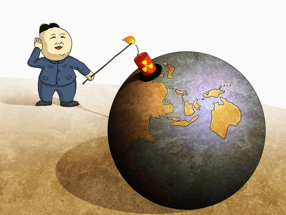
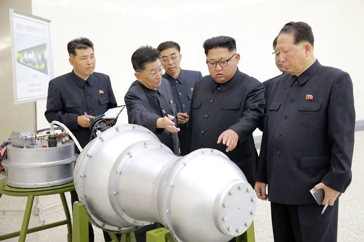
（核试验之前，朝中社公布的照片——金三胖视察核武器研究所）
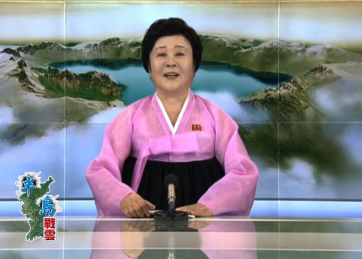
（朝鲜官方电视台宣布氢弹试验成功，播音员是朝鲜电视台的当家花旦——李春姬）
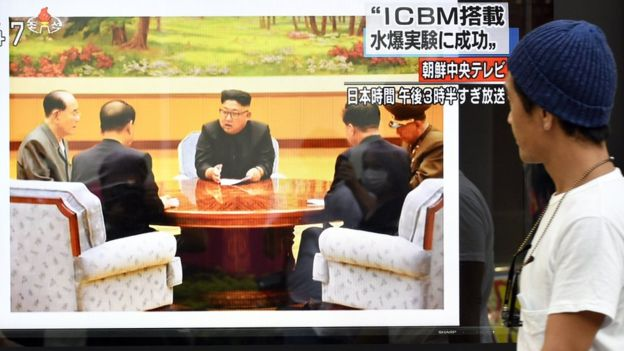
（核试验之后，朝鲜官方电视台播放的照片——金三胖在劳动党政治局常委会上签署氢弹试验的命令）
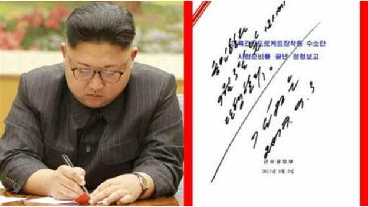
（三胖的墨宝，难得一见）
《朝鲜核威力推算为广岛原子弹10倍 或发射 ICBM @ 共同社》
《韩气象厅称朝今人工地震威力为去年核试五六倍 @ 韩联社》
编程随想注：天朝官方的地震台记录到两次地震波，间隔8分钟。第二次震波估计是核试验所在山体发生塌陷。
9月3日 11:30，中国地震台报6.3级地震（疑似爆炸）
9月3日 11:38，中国地震台报4.6级地震（塌陷）
《卫星图像显示朝鲜核试验场发生塌方 @ 纽约时报》
编程随想注：专门关注北朝鲜的 38 North 网站发布了核爆前后的卫星照片供对比（如下），从中可见强烈地震对地表的破坏。
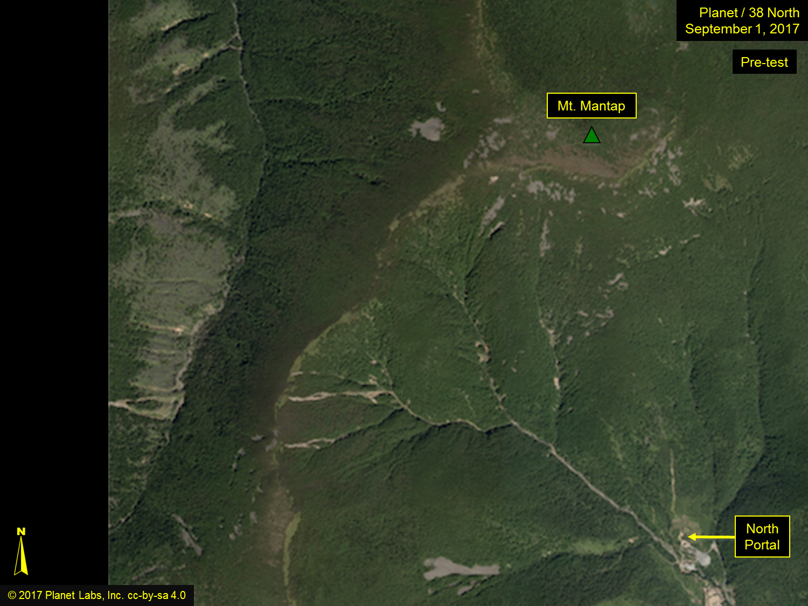
（核试验前的卫星照片，时间是9月1日）
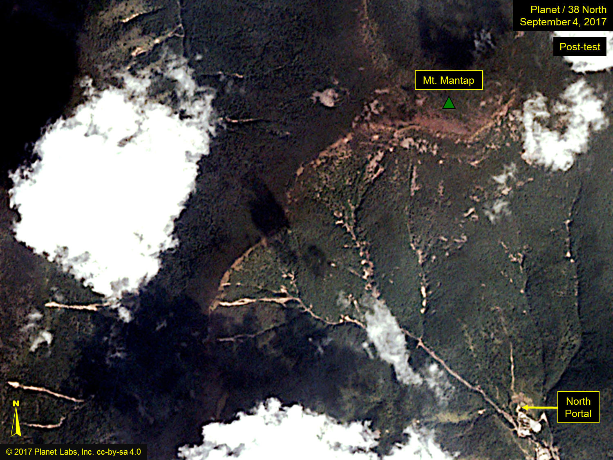
（核试验后的卫星照片，时间是9月4日）
《中國東北民眾嚇壞：樓都晃了 當局啟動二級應急預案 監察核污染 @ 蘋果日報》
（以下是此文的摘录）
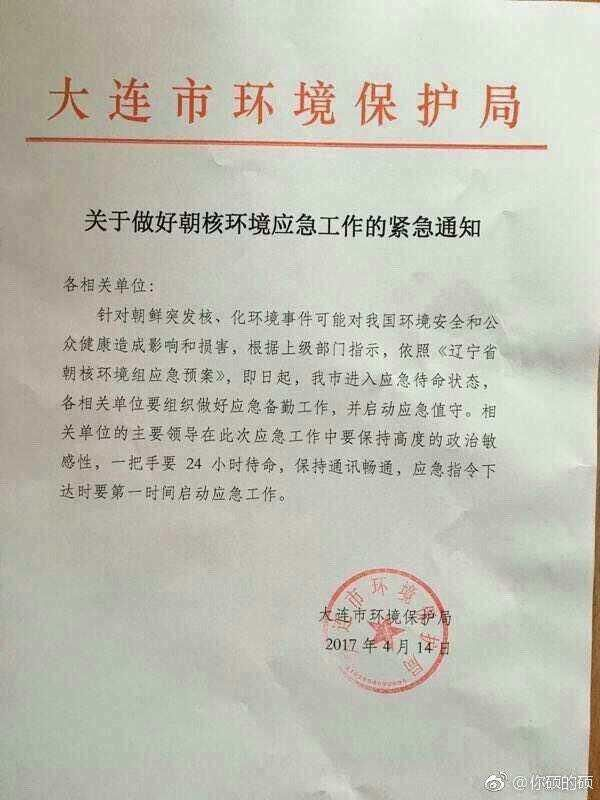
（大连市环保局在4月份就下发了紧急通知）
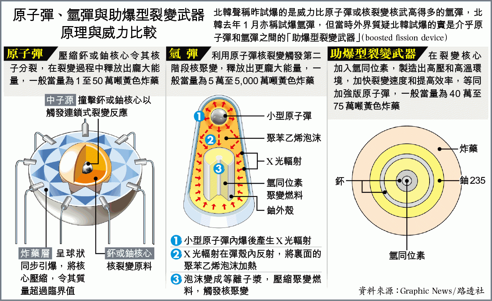
（以上图片来自《苹果日报》）
各国的氢弹史
1952年：美国在太平洋马绍尔群岛的埃内韦塔克环礁试爆了第一枚氢弹；
1953年：苏联在中西伯利亚试爆自己的首枚氢弹；
1957年：英国在太平洋圣诞岛成功试爆自己的首枚氢弹；
1967年：中国在新疆试爆自己的首枚氢弹；
1968年：法国在南太平洋方加陶法环礁试爆自己的首枚氢弹；
1998年：印度在拉贾斯坦邦试爆自己的首枚氢弹。
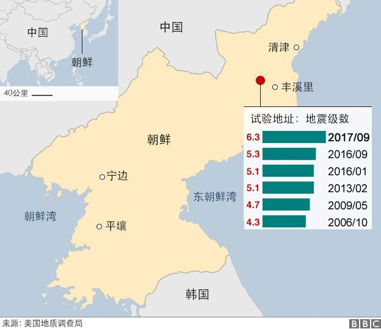
（六次核试验引发的地震级数，摘自 BBC 的报道）
编程随想注：根据里氏震级的定义——震级相差2级，能量相差1000倍；每增加一级，能量增加大约32倍
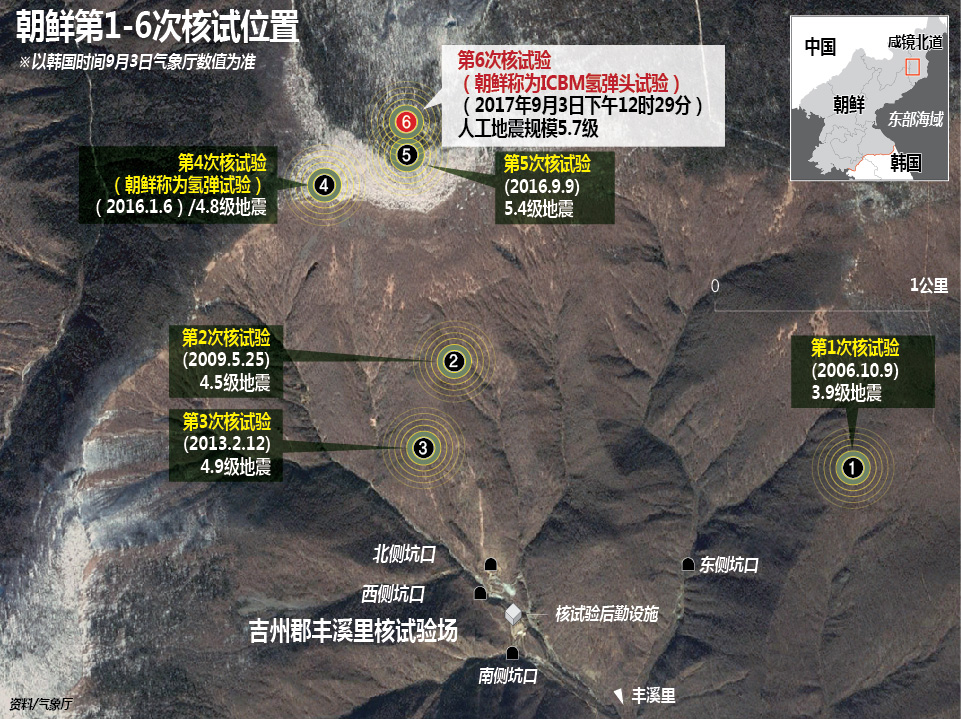
（朝鲜历次核试验的详细地理位置，摘自韩联社的报道）
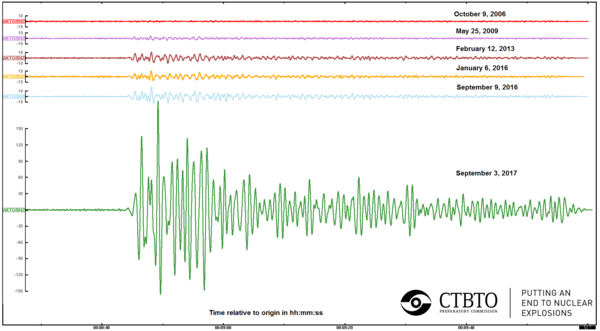
（六次核试验的地震波对比图，摘自 CTBTO，链接在“这里”）
编程随想注：CTBTO 是“全面禁止核试验条约组织”的洋文缩写。
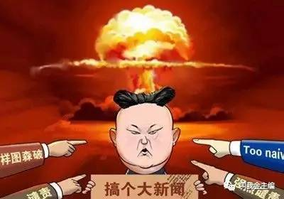
编程随想注：
前几个月写过一篇《聊聊朝鲜半岛核问题——北朝鲜博弈策略分析》，大伙儿可以参考一下。
《金正恩显示无意通过外交途径化解危机 @ 美国之音》
（以下是此文的摘录）
《朝鲜核试验真正意图在于向习近平施压？ @ 纽约时报》
（以下是此文的摘录，粗体是俺标注滴）
《金正恩玩弄习近平于股掌皆因看准十九大要维稳 @ RFI/法广》
（以下是此文的摘录）
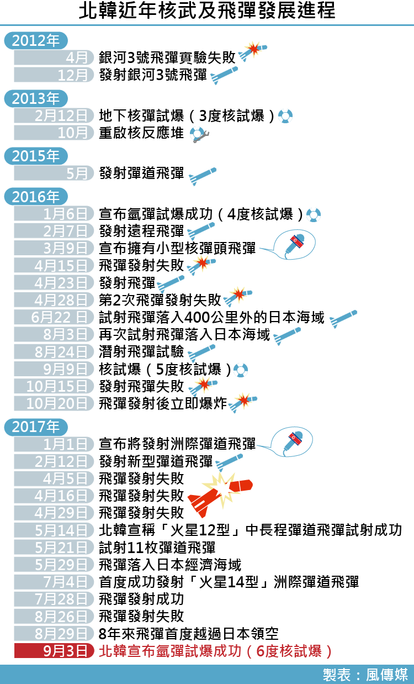
（最近5年来，北朝鲜在导弹与核弹方面的进展）
《日本防卫相认为朝鲜或已完成实战型核开发 @ 共同社》
《主张对朝强硬的中国鹰派声音渐强 @ FT/金融时报》
（以下是此文的摘录）
《朝鲜第六次核试验越过了北京的红线？ @ VOA/美国之音》
（以下是此文的摘录）
编程随想注：以下是美国总统川普在 Twitter 上的回应
《朝鲜核试——美国警告将作出“强力回应” @ BBC》
（以下是此文的摘录）
《朝鲜核危机——美国称金正恩在“乞求战争” @ BBC》
（以下是此文的摘录）
《美核动力航母离港 或前往朝鲜半岛附近 @ 共同社》
（以下是此文的摘录）
《六成韩民众赞成拥核自保 @ 韩联社》
（以下是此文的摘录）
《韩国防部称剩余4辆萨德发射车7日部署 @ 韩联社》
（以下是此文的摘录）
《韩国防长提及重新部署战术核武器和创设斩首部队 @ 共同社》
《朝鲜核危机升级，美韩同盟出现裂痕 @ VOA/美国之音》
《安倍表示将采取具体行动与美国共同遏制朝鲜 @ 共同社》
《日本政府内部出现“无法阻止朝鲜拥核”的悲观论调 @ 共同社》
《普京：加大对朝制裁没有意义 @ FT/金融时报》
《俄外交部认为，除了俄中两国就调解朝鲜局势提出的建议，目前别无他途 @ 俄通社》
《朝获取外国武器技术 中国是一大来源 @ VOA/美国之音》
（以下是此文的摘录，粗体是俺标注滴）
《揭秘朝鲜核技术进展的幕后力量——海归科学家 @ 华尔街日报》
（以下是此文的摘录，粗体是俺标注滴）
《北韓國慶日文宣未提中國，或轉向親俄 @ 東網》
（以下是此文的摘录，粗体是俺标注滴）
《路透社：唇齿相依不再 中朝关系已到崩溃边缘 @ 墙外楼》
《误判可能导致朝鲜半岛开战 @ FT/金融时报》
（以下是此文的摘录，粗体是俺标注滴）
《朝鲜核危机——氢弹测试后 会是战争吗？ @ BBC》
（以下是此文的摘录，粗体是俺标注滴）
《邓聿文：朝鲜核爆冲破中美两国底线 @ FT/金融时报》
（编程随想注：邓聿文曾经在中央党校主办的《学习时报》担任副编审。以下是此文的摘录）
《朝鲜危机接近最终摊牌 @ FT/金融时报》
（以下是此文的摘录）
《美国总统特朗普可能压制朝鲜的三大“军事选项” @ BBC》
（以下是此文的摘录，粗体是俺标注滴）
《朝鲜——中国谋求亚洲主导权的绊脚石 @ 纽约时报》
（以下是此文的摘录）
《面对朝鲜危机 中国军队有3个选项 @ 德国之声》
《朝鲜发展核武的目的——守还是攻？ @ FT/金融时报》
《中国会不会切断对朝原油供应？ @ 德国之声》
《坏消息——中国解决不了朝鲜问题 @ 纽约时报》
（以下是此文的摘录）
俺博客上，和本文相关的帖子（需翻墙）：
《如何解读金三胖在近期的外交动作》
《聊聊朝鲜半岛核问题——北朝鲜博弈策略分析》
《聊聊朝鲜半岛核问题——美国博弈策略分析》
《聊聊“核战略的博弈模型”与“中美新冷战”》
《北朝鲜金氏王朝的崛起——聊聊金日成的历次大清洗》
《每周转载：朝鲜准备核爆，南韩部署萨徳，中国抵制乐天（大量网友评论）》
《每周转载：金正男遇刺（汇总各方报道及照片）》
《每周转载：网友热议北朝鲜张成泽倒台》
《每周转载：关于朝鲜核试验（网文7篇，评论若干）》
《每周转载：关于北朝鲜（网文5篇）》
此事已经过了一周，俺来汇总一下各国的报道及评论文章。
★第6次核爆的相关报道
◇来自北朝鲜官方的报道
（核试验之前，朝中社公布的照片——金三胖视察核武器研究所）
（朝鲜官方电视台宣布氢弹试验成功，播音员是朝鲜电视台的当家花旦——李春姬）
（核试验之后，朝鲜官方电视台播放的照片——金三胖在劳动党政治局常委会上签署氢弹试验的命令）
（三胖的墨宝，难得一见）
◇关于此次试验的当量
《朝鲜核威力推算为广岛原子弹10倍 或发射 ICBM @ 共同社》
《韩气象厅称朝今人工地震威力为去年核试五六倍 @ 韩联社》
◇试验场出现山体塌方
编程随想注：天朝官方的地震台记录到两次地震波，间隔8分钟。第二次震波估计是核试验所在山体发生塌陷。
9月3日 11:30，中国地震台报6.3级地震（疑似爆炸）
9月3日 11:38，中国地震台报4.6级地震（塌陷）
《卫星图像显示朝鲜核试验场发生塌方 @ 纽约时报》
编程随想注：专门关注北朝鲜的 38 North 网站发布了核爆前后的卫星照片供对比（如下），从中可见强烈地震对地表的破坏。
（核试验前的卫星照片，时间是9月1日）
（核试验后的卫星照片，时间是9月4日）
◇东北三省越来越悬了
《中國東北民眾嚇壞：樓都晃了 當局啟動二級應急預案 監察核污染 @ 蘋果日報》
（以下是此文的摘录）
中國東北各地有震感，延邊的網友表示：「快被嚇死了，震感明顯，樓都晃了！」瀋陽、長春及哈爾濱的網民分別表示感到明顯晃動，持續大約8秒。
北韓歷次核試都在中朝邊境，中國長白山地區離核爆點僅60多公里，而昨日的氫彈試驗，中國震感區域明顯比之前5次北韓核試大得多。
東北網友紛紛表示恐慌：「這玩意可是伴隨着核污染的，東北人民瑟瑟發抖」；「是塌陷式地震，會對地下水造成威脅吧？」「身在東北，真肝顫啊，真得抓緊移民了」。
（大连市环保局在4月份就下发了紧急通知）
★科普：氢弹与原子弹的差别
（以上图片来自《苹果日报》）
各国的氢弹史
1952年：美国在太平洋马绍尔群岛的埃内韦塔克环礁试爆了第一枚氢弹；
1953年：苏联在中西伯利亚试爆自己的首枚氢弹；
1957年：英国在太平洋圣诞岛成功试爆自己的首枚氢弹；
1967年：中国在新疆试爆自己的首枚氢弹；
1968年：法国在南太平洋方加陶法环礁试爆自己的首枚氢弹；
1998年：印度在拉贾斯坦邦试爆自己的首枚氢弹。
★北朝鲜历次核试验对比
（六次核试验引发的地震级数，摘自 BBC 的报道）
编程随想注：根据里氏震级的定义——震级相差2级，能量相差1000倍；每增加一级，能量增加大约32倍
（朝鲜历次核试验的详细地理位置，摘自韩联社的报道）
（六次核试验的地震波对比图，摘自 CTBTO，链接在“这里”）
编程随想注：CTBTO 是“全面禁止核试验条约组织”的洋文缩写。
★关于鑫胖的动机
编程随想注：
前几个月写过一篇《聊聊朝鲜半岛核问题——北朝鲜博弈策略分析》，大伙儿可以参考一下。
《金正恩显示无意通过外交途径化解危机 @ 美国之音》
（以下是此文的摘录）
通过外交途径解决朝鲜核威胁的前景依然不明朗。朝鲜领导人金正恩没有显示出多少跟华盛顿妥协或跟北京沟通的意愿。
首尔峨山政策研究院的政治分析家崔康说：“他真心相信强硬路线政策，因为完成导弹与核项目实际上是让他的权力、让他对政权的控制权合法化的一个最重要的因素。”
《朝鲜核试验真正意图在于向习近平施压？ @ 纽约时报》
（以下是此文的摘录，粗体是俺标注滴）
作为一场集多个最具活力经济体的峰会的东道主，此刻本应是中国国家主席习近平享受他的全球影响力的时候。然而就在习近平到周日这场精心组织的峰会上致辞几小时前，朝鲜领导人金正恩引爆了他的第六枚核弹。
金正恩在核试验和导弹试射的时机把握上十分精到，看来意在给中国造成最大程度的尴尬。在中国东南部举办的峰会汇聚了俄罗斯、巴西、印度和南非等国的领导人，也就是所谓的“金砖国家”，然而它的风头很快被核试验的消息盖过，此次试验给中国部分居民带去了震感，也再度让人们担心该国东北地区会遭到核污染的侵袭。
这已经不是金正恩第一次选择一个挑衅性的时刻来炫耀朝鲜的武器。五月，在习近平即将发表一场讲话几小时前，他也试射了一枚弹道导弹，当时多国领导人正齐聚北京，商谈由中国力推、价值万亿美元的“一带一路”计划。
分析人士称，朝鲜核试验和习近平的重要公开讲话出现这样的交汇并非偶然。他们认为，这是为了表示，金正恩这个任意妄为的毗邻小国领导人，可以削弱中国主席习近平的权力和威望。事实上，一些分析人士认为，近期的试验主要目的就是向习近平而非特朗普总统施压。
《金正恩玩弄习近平于股掌皆因看准十九大要维稳 @ RFI/法广》
（以下是此文的摘录）
外交政策杂志和华尔街日报不约而同发表评论文章，指出北韩领袖金正恩在这次核危机中使得北京丧尽面子，甚至可用“玩弄（play）”习近平来形容平壤政府的行为，皆因金正恩看准习近平在十九大“封王加冕（coronation）”之前，不敢冒然造次，以免遭到敌对派系有机可乘，坏了习近平荣登伟大领袖行列，或甚至延长任期的大计。
外交杂志的分析指出，习近平一直视自己为毛泽东之后中国最强势的领导人，但金正恩却三番四次让习丢脸，例如判处金家一名与北京关系良好的亲戚死刑；到了最近，北韩第六次的核试，也是威力最强大的核试，时间上让习近平身为金砖五国峰会主人家出锋头的盛事，黯然失色，而且刚巧也是中共举行非常重要的十九大的数个星期之前。北韩驱之不散的核危机幽灵，显然与习近平一向给人凡事都在他控制之下的形象，大相径庭。
分析又指，中国一直努力试图跻身大国行列，但却连一个支流小国也控制不了，它又如何令人信服是一个大国？
中国对北韩的政策，一直是稳定压倒一切，但却正好受制于北韩的挑衅。
中国虽然“强烈谴责”北韩的核试，但却拒绝采取行动削减对北韩九成的援助、贸易以及投资，因此只是嘴巴讲讲而已，习近平难以遮掩被北韩奚落丢脸的事实。东北亚的政治安全议题，话语权不在北京而在平壤，而这个深远的改变只会影响中国的地位。
★关于北韩的战力
（最近5年来，北朝鲜在导弹与核弹方面的进展）
《日本防卫相认为朝鲜或已完成实战型核开发 @ 共同社》
★各国的反应
◇中国
《主张对朝强硬的中国鹰派声音渐强 @ FT/金融时报》
（以下是此文的摘录）
长期以来，中国主流学者一直坚信，解决半岛危机的唯一途径是打造与平壤的经济纽带，甚至默许朝鲜成为核国家。他们称，制裁只会适得其反，军事行动更不可想象。
但这一观点正变得越来越站不住脚，更多的核试验震动着中国东北各省的大地。平壤的所作所为及其不断升级的挑衅言辞已经激怒了北京，后者曾押上自身的声誉，相信自己有能力驾驭朝鲜领导人金正恩(Kim Jong Un)。上周日的氢弹试验——迄今最大规模的一次——引起了中国境内大地颤动。
中国的“专家界”是窥探中国大体上不透明的外交政策机器的最佳窗口。今年，同情朝鲜的声音已渐渐从报纸的评论版和学术期刊上消失。
......
在谈到中国国内那些继续敦促对朝采取温和立场的专家时，智库清华-卡内基全球政策中心（Carnegie-Tsinghua Center for Global Policy）主任韩磊（Paul Haenle）说：“他们还在，但人数越来越少。”
相反，中国主张对朝强硬的鹰派正在涌现。虽然北京的官方声明倾向于保持缓和矛盾的讲话要旨，但中国高校和智库的专家们正越来越多地谈论以强硬手段对付平壤的必要性。
《朝鲜第六次核试验越过了北京的红线？ @ VOA/美国之音》
（以下是此文的摘录）
澳大利亚《悉尼先驱晨报》的报道说，朝鲜的第六次核试验已经超越了中国的“红线”， 球现在在中国的脚下，现在是要看中国怎么做了。
美国国防部长马蒂斯在朝鲜进行最新的核试验后表示，朝鲜对美国、美国属地关岛或美国盟国的威胁都将得到“大规模的军事反应”。但是，《悉尼先驱晨报》认为，与美国的“大规模军事反应”相比，更有可能的一个决定是中国是否会对朝鲜彻底断油。美国一直敦促中国切断对朝鲜的能源供应，但是，到目前为止一直遭到中国的拒绝。中国分析人士说， 那是因为北京一直在等待朝鲜越过红线后再打出最后一张牌。
......
今年四月，中国半官方的《环球时报》谈到了中国在朝鲜问题上的底线。评论说，在朝鲜问题上，中国的第一条底线是中国东北的安全、稳定，不能受到朝鲜核污染。朝鲜进行核试验地点是朝鲜全境内距离平壤最远的一点，但是就在中朝边境附近。
......
中国会对朝鲜断油吗？
中国人民大学美国研究中心主任时殷弘在接受《联合早报》采访时说，中国能够以不同方式对朝断油，例如彻底永久断油，彻底但暂时断油，部分暂时断油，部分永久断油。但是，他又说：“现在不能预测中国会用哪一个方式，不过中国一定会非常不愿意经久、彻底断油。因为一旦用了这个手段之后，中国就没有手段可用了。”
◇美国
编程随想注：以下是美国总统川普在 Twitter 上的回应
North Korea has conducted a major Nuclear Test. Their words and actions continue to be very hostile and dangerous to the United States.....
——Donald J. Trump (@realDonaldTrump) 2017年9月3日
（译文：朝鲜进行了一次大型核试验，他们的言行对美国来说还是非常敌对和危险……）
North Korea is a rogue nation which has become a great threat and embarrassment to China, which is trying to help but with little success.
——Donald J. Trump (@realDonaldTrump) 2017年9月3日
（译文：朝鲜是个流氓国家，给中国构成了重大威胁与羞辱。该国（中国）尝试帮忙，但是没甚成效。）
South Korea is finding, as I have told them, that their talk of appeasement with North Korea will not work, they only understand one thing!
——Donald J. Trump (@realDonaldTrump) 2017年9月3日
（译文：我早就跟他们说过了，韩国跟朝鲜讲怀柔是行不通的，他们只懂得一件事情！）
《朝鲜核试——美国警告将作出“强力回应” @ BBC》
（以下是此文的摘录）
美国国防部长马蒂斯表示，朝鲜对美国及其盟国的任何威胁，均会被报以“大规模军事回应”。
马蒂斯向美国总统特朗普就朝鲜最新核试进行国家安全汇报后，作出上述表态。
《朝鲜核危机——美国称金正恩在“乞求战争” @ BBC》
（以下是此文的摘录）
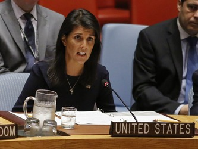
（美国驻联合国大使妮基·黑利）
美国驻联合国大使妮基·黑利表示，朝鲜进行迄今为止最新和威力最大的核爆试验，朝鲜领导人金正恩这是在“乞求战争”（编程随想注：此处译文不妥，更贴切的翻译是【讨打】）。
黑利在联合国安理会举行的紧急会议上说，美国并不期望战争，但美国的耐心“并非没有限制”。美国很快将提出新的联合国决议，强化对朝鲜的制裁。
《美核动力航母离港 或前往朝鲜半岛附近 @ 共同社》
（以下是此文的摘录）
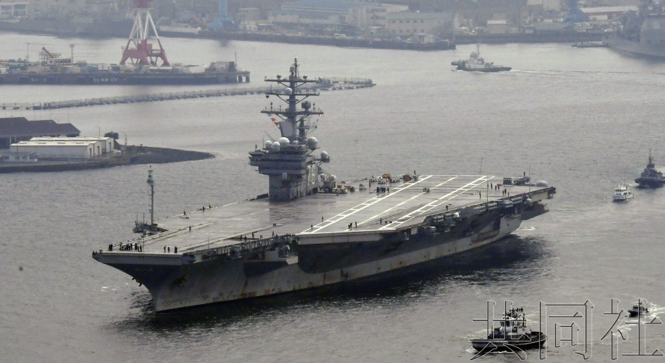
（核动力航母“罗纳德･里根”号）
部署在美国海军横须贺基地（位于神奈川横须贺市）的核动力航母“罗纳德･里根”号8日离开该基地，将进行长期航海前往日本周边海域执行警戒任务。鉴于朝鲜局势趋于紧张，美韩就向韩国增派核动力航母及战略轰炸机达成一致，“罗纳德･里根”号是否会被派至朝鲜半岛附近备受关注。
◇南韩
《六成韩民众赞成拥核自保 @ 韩联社》
（以下是此文的摘录）
盖洛普韩国于9月5日至7日面向全国1004名成年人进行的一项民意调查结果显示，60%的受访者赞成韩国自主拥有核武器，仅有35%的受访者反对。
《韩国防部称剩余4辆萨德发射车7日部署 @ 韩联社》
（以下是此文的摘录）
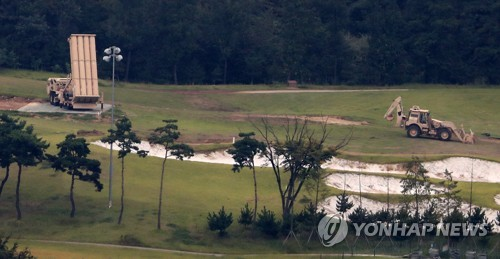
韩联社首尔9月6日电 韩国国防部6日表示，剩余4辆“萨德”发射车等有关设备将于7日临时部署于庆尚北道星州的驻韩美军萨德基地。待这4辆“萨德”发射车运抵星州基地后，可组建完整的1套萨德系统并投入正常运行。
《韩国防长提及重新部署战术核武器和创设斩首部队 @ 共同社》
《朝鲜核危机升级，美韩同盟出现裂痕 @ VOA/美国之音》
◇日本
《安倍表示将采取具体行动与美国共同遏制朝鲜 @ 共同社》
《日本政府内部出现“无法阻止朝鲜拥核”的悲观论调 @ 共同社》
◇俄罗斯
《普京：加大对朝制裁没有意义 @ FT/金融时报》
“制裁制度已经走到了头，它是无效的，”普京在中国厦门金砖国家峰会的一个新闻发布会上说。“朝鲜人宁可吃草也不会放弃这个计划，除非他们感到安全……而什么能确保安全呢？应用国际法。”
......
“大家都清楚地记得伊拉克和萨达姆•侯赛因（Saddam Hussein）的下场。侯赛因放弃了生产大规模杀伤性武器……朝鲜人也知道这一点，并且记得清清楚楚，”普京说，“你认为朝鲜会因为一些制裁而放弃（它的道路）吗？”
《俄外交部认为，除了俄中两国就调解朝鲜局势提出的建议，目前别无他途 @ 俄通社》
★北韩如何获取核技术？
《朝获取外国武器技术 中国是一大来源 @ VOA/美国之音》
（以下是此文的摘录，粗体是俺标注滴）
《华尔街日报》调查发现，朝鲜有留学生在中国著名的军事技术院校哈尔滨工业大学学习可以用于稳定宇宙飞行器和吸收导弹发射系统震荡的技术，这种技术可以应用于潜艇，也可以用于降低汽车、楼房和直升机的震荡。
哈工大方面表示，随着对朝鲜的制裁措施的收紧，在哈工大学习敏感技术的朝鲜研究生在今年6月回国，其他的人则改学联合国不禁止的科目，如管理科目。但是，那些返回朝鲜的留学生在离去的时候可能带走了一些额外的技术知识，因为校方发现，在今年5月16日，有九个在哈工大学习的外国学生违规下载了五万七千篇论文。哈工大的教职工和学生说，违规的人是朝鲜人。
《揭秘朝鲜核技术进展的幕后力量——海归科学家 @ 华尔街日报》
（以下是此文的摘录，粗体是俺标注滴）
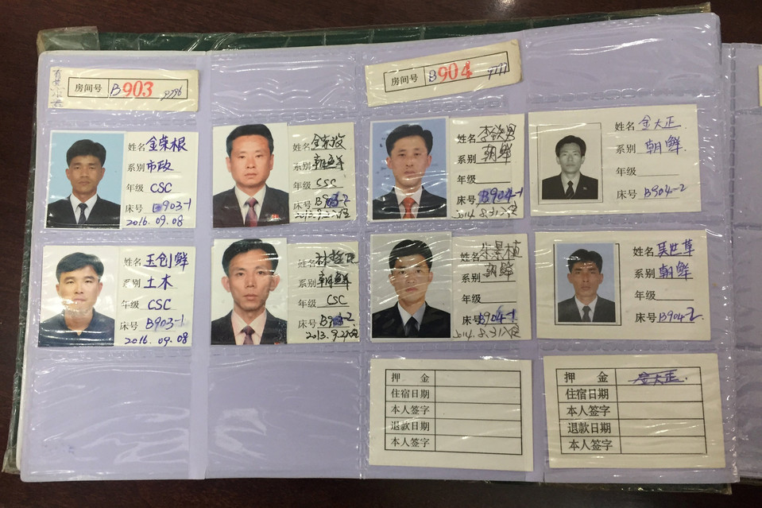 该校教职工称，由于联合国的制裁，这些留学生近期已返回朝鲜。他们当中大部分都是科学家。
（图为就读于【哈工大】的朝鲜博士生在其宿舍楼登记簿上的登记信息）
在试射今年以来的第18枚弹道导弹一周后，朝鲜上周日又试爆了一枚据称是国内制造的氢弹。这一消息再度使外界注意到朝鲜核计划的一个重大谜题：在国际社会一致行动阻止朝鲜获取武器技术的情况下，朝鲜核计划怎会取得如此快速的发展？
答案也许就藏在学成归国的朝鲜科学家身上，特别是在中国留学的朝鲜科学家。在有些情况下，这些活动显然违反了2016年联合国禁止向朝鲜留学生教授某些学科知识的制裁决议。
《华尔街日报》（The Wall Street Journal）通过查阅官方数据、学术论文和大学资料发现，近年来，有数百位朝鲜科学家曾在国外留学，其中很多人的专业涉及联合国认为有可能推动朝鲜武器计划的领域。
在朝鲜长达60年的核武器研发阶段的早期，依靠的是前苏联的技术和专家，后来则依靠伊朗和巴基斯坦。如今朝鲜用的却是本国科学家，这表明遏制朝鲜的核野心只会变得越来越难。
★“中朝友谊”不再，或反目成仇
《北韓國慶日文宣未提中國，或轉向親俄 @ 東網》
（以下是此文的摘录，粗体是俺标注滴）
北韓上周六（9日）慶祝建國69周年，外界普遍關注朝方會否在此特別日子試射導彈或核試。不過，官媒《朝中社》則在國慶日報道中，指俄羅斯總統普京已向領袖金正恩發賀電，惟隻字未提傳統盟友中國。
朝中社指出普京向金正恩表示，俄朝關係發展更進一步，符合兩國人民共同利益，對朝鮮半島和東南亞的安全及穩定作出貢獻。同時，朝中社表明古巴領袖勞爾‧卡斯特羅亦有向北韓發賀電。不過有南韓媒體發現，朝中社竟然未有提及中國，未知中方是否未發出賀電。有南韓媒體認為，這代表中朝關係因核試及試射導彈而僵化。
《路透社：唇齿相依不再 中朝关系已到崩溃边缘 @ 墙外楼》
★半岛核危机的未来发展
《误判可能导致朝鲜半岛开战 @ FT/金融时报》
（以下是此文的摘录，粗体是俺标注滴）
20世纪的重大战争多由灾难性的误判而引爆。如今特朗普和金正恩的不可预测性加大了双方误判的风险。
......
本周，朝鲜展开了有史以来规模最大的核试验。上周，朝鲜发射的弹道导弹飞越日本上空。或许这些行动是实现最终威慑形式（能够打击美国的核导弹）的必要步骤。但一次紧接一次的核挑衅还更有可能让美国人认为，金正恩真的是一个不理性的人，即俗话说的“拥有核武器的疯子”。这进而更容易让美国政府觉得有理由发动先发制人的打击。
特朗普的不可预测性提升了金正恩误判形势、可能招致美国打击的风险。特朗普发誓说，不会允许朝鲜发展出能够威胁美国的核武器。他还多次表示，他愿意发动先发制人的军事打击，还一度威胁要让金正恩见识“怒与火”。但外界对特朗普威胁的可信度的质疑，减损了这位美国总统利用边缘政策迫使朝鲜后退的努力的作用。
......
特朗普对朝鲜这次最新、而且威力最大的核试验的反应，加剧了外界对美国政策的困惑，这是危险的。特朗普没有强调美国与韩国的团结，而是选择批评韩国“姑息”朝鲜。再加上特朗普正积极考虑退出美韩自由贸易协定(US-South Korea Free Trade Agreement)的消息，这可能会促使朝鲜认为其核挑衅正在发挥作用——离间了美韩同盟。
特朗普还在关键时刻破坏了美国的可信度，他在Twitter上称，美国正在考虑“停止与任何跟朝鲜做生意的国家的一切贸易往来”。从字面上看，这将导致美中这两个世界最大经济体之间贸易的终止；此举将令全球经济陷入混乱。特朗普发出的威胁表明了他对贸易和国际关系的认识十分幼稚。这一威胁还表明他仍受困于相互竞争的两种本能，其天生的保护主义倾向可能压倒抗击朝鲜核威胁的意愿。
白宫发出的混乱信号增加了误判的危险，不仅是在平壤，在首尔、北京和东京亦然。
......
即便掌权的是理性、经验丰富的领导人，这些风险都将很难应对。
但如今，关键的决策者是一位脾气火爆、没有相关经验的71岁商人；外加一位身边围绕着满心恐惧的马屁精的33岁的独裁者。
《朝鲜核危机——氢弹测试后 会是战争吗？ @ BBC》
（以下是此文的摘录，粗体是俺标注滴）
BBC 外交事务记者乔纳森·马库斯（Jonathan Marcus）为大家解答局势可能如何发展等问题。
双方会爆发武装冲突吗？
没有人希望朝鲜半岛会爆发战争。现时局势十分紧张，任何小型冲突都会升级为全面战争，而美国方面早已强烈暗示平壤当局不应做任何可能会令局势升级的事。
如果真的爆发全面战争，这个冲突将带来灾难性的人命伤亡。冲突各方也可能会用上核武器。如果真的发生，那将是第二次世界大战末期以来首次有国家在冲突期间使用核武，将为国际政治定下一个可怕的先例。
战争也将留下严重的破坏。我们可以肯定的是，到那个时候，朝鲜将不复存在。正是因为大家都知道这会发生，所以我们才会希望平壤当局尚存理性，明白个中的危险。
尽管如此，朝鲜目前的举动仍然跟“玩火”没有分别，它面对的代价可能很大。
谁是重要的角色？他们会有甚么影响力？
战争的初期必定会是朝鲜跟危机其余各方之间的冲突──尤其是韩国和美国。
日本的角色还未能确定，除非它遭受朝鲜的直接攻击。
话虽如此，日本本土有大量的美国驻军。而美国也会寻求联合国安理会协助，在外交方面给它支持。我们很难推算联合国有多愿意介入这个冲突──我们希望这只是一个学术上的问题。
武装冲突会演变成全球核战吗？
这个不大可能，因为一场区域性战争已能带来十分坏的影响。
俄罗斯、美国的北约盟友大多不会受这个冲突直接影响。最大的问题是，如果冲突爆发，中国会怎样做？它的反应会跟1950年代一样出兵干预冲突，令平壤当局不至倒台吗？仰或它这次将抽手旁观？
中国与朝鲜有签订联合防务条约，但并不代表北京当局必定会介入任何冲突。
《邓聿文：朝鲜核爆冲破中美两国底线 @ FT/金融时报》
（编程随想注：邓聿文曾经在中央党校主办的《学习时报》担任副编审。以下是此文的摘录）
朝鲜第六次核爆等于扇了中国一耳光，可以看作朝鲜对中国不满和怨恨的一次总爆发，让中国尴尬无比。它不但说明中国政府倡导的“双暂停”是多么的一厢情愿，而且此后在“萨德”问题上中国也将再无反对理由，甚至只能眼睁睁看着韩国引入核武。这就是中国一再对朝绥靖的后果。
不好这样一来也好，它使得中国之前一直刻意的“模糊”对朝政策进行不下去，必须在“扶朝”和“遏朝”间二选一。基于地缘政治、意识形态和国内因素的考量，一直以来，中国政府虽然口头上表达反对朝鲜拥核，但在战略上倾向于扶持朝鲜，表现在制裁行动上就显得弛缓，给人一种怕得罪朝鲜的印象。朝鲜这次核爆大大压缩了中国对朝政策的“模糊”空间，也使得中国失去了和美国在朝鲜问题上进行博弈的道义基础，减少了和美国讨价还价的余地。接下来，中国要么拿出实际行动制裁朝鲜，要么等着美国在韩国部署核武，或者对朝鲜进行武力打击。
应该说，中国政府已经意识到这一点。这从外交部前后两次声明中可见一斑。
......
对美国来说，朝鲜此次核爆也是打了特朗普政府一记耳光。在美国推动联合国出台新的制裁决议后，仅仅因为朝鲜10多天没过激反应，国务卿蒂勒森竟然认为朝鲜表现得很克制，特朗普甚至一度幻想和朝鲜对话，但接着朝鲜就打破了特朗普政府的这种“轻信”，发射飞跃日本领土的导弹，这次更是通过核爆来回应美韩军演。经此一爆，美国政府算是彻底“领教”了金正恩的“顽固”和“厉害”，不会再轻易相信他了。这也将减少美国政府的“犹豫”空间，使得美国的政策选择变得简单：必须将军事选项真正放在桌面上，认真考虑武力打击朝鲜的可能性。在这之前，美国虽然也说不排除先发制人打击的可能性，但还是把和平解决朝核问题作为优先选择。朝鲜第六次核爆后，特朗普政府虽然不会放弃和平解决的努力，但战争选项的可能性大增。
《朝鲜危机接近最终摊牌 @ FT/金融时报》
（以下是此文的摘录）
朝鲜最新的核试验不仅在华盛顿和首尔，也在东京、北京和莫斯科引起震惊和谴责。这是平壤方面迄今最大威力的核试验。朝鲜方面有关这是一枚氢弹的声明可能是属实的。此次核试验一周之前，金正恩（Kim Jong Un）政权刚刚发射了一枚飞越日本的弹道导弹。来自平壤的行动升级和挑衅现在变得越来越密集了。
但是共同的全球焦虑仍然不太可能带来一种真正团结的国际对策。相反，它甚至可能扩大分歧：一面是希望增加对平壤方面强制压力的美方，另一面是赞成同朝鲜谈判的中方和韩方。
......
就在主要国际大国仍然沮丧和无能为力的同时，朝鲜的威胁继续愈演愈烈。经过多年的暗中发酵，朝鲜已经登上了国际议程的最高位置。某种最终的危机现在可能在酝酿中。但是就连这场大戏的主要演员也不知道这场危机将走向谈判还是战争。
《美国总统特朗普可能压制朝鲜的三大“军事选项” @ BBC》
（以下是此文的摘录，粗体是俺标注滴）
选项一：“优化抑制手段”
加强军事部署是最低风险、但很可能是最低效率的一个选项。因为在该区长期以来已有相关军事部署，但对压制朝鲜的弹道导弹及核计划也不太有作用。
美国可以派驻更多地面部队至韩国，可以加装类似萨德系统的导弹防御性装备或是重型火炮装甲车，展示其动武的决心。但韩国忧虑刺激朝鲜，反对增加美军地面部队。
事实上，朝鲜在美韩年度联合军演已有所反应，朝鲜或会把上述提出的可能性，视为地面入侵的前奏。
中国和俄罗斯亦毫无疑问会强烈反对，两国都有能力透过东欧、南海、东海等地方，制衡美国。
美国海军可能增加朝鲜半岛附近的部署，派驻更多舰艇、驱逐舰、甚至是更多航母战斗群，去拦截朝鲜发射的弹道导弹。除了海军，美国空军亦可以在关岛、韩国、日本加强前进型军事力量，调配更多战斗机、监察机、重型轰炸机和海上支援船队。但美国海军和空军，在全球已有繁重任务，开始感到吃力。美军在例如伊拉克、阿富汗等多个地方有多年持续性的高强度军事部署。
更重要的是，时间或站在朝鲜那边，因为美军增加部署不会直接暂停朝鲜发展迅速的核武计划和弹道导弹测试。
......
选项二：“外科手术式打击”
所谓“外科手术式打击”，是指以精确火力或特种作战力量，对某一个特定的要害目标，从远距离上实施迅速、突然闪击的作战行动。
美国海军和空军在全球都有最先进的“外科手术式打击”技术。美军可以选择由潜艇或B2隐形轰炸机，在朝鲜海岸发射多杖精确的战斧巡航导弹，击破朝鲜弹道导弹或核设施。即使是在地下深处的设施，亦不是三万磅巨型钻地弹的对手。这种方法可以对高价值目标造成严重破坏，骤眼看十分吸引。
而美国战机会否遇上危险则视乎多个因素，例如朝鲜有没有事前获警告，发动多少次攻击、非隐身战机在防御范围内的参与程度等等。
然而，朝鲜的防空网络混合了俄罗斯（或苏联时代）、中国及自制的地对空导弹及逾50年前获得的雷达系统，难以判断网络的实力。如果美国战机被击落或有意外，要拯救机上的人近乎是不可能的任务，或许只由他们听天由命。
更重要的是，即便成功破坏了部分核设施、导弹设施或控制中心，甚至乎击毙朝鲜领导层，也不会阻止到朝鲜报复。朝鲜人民军有能力向韩国作出势不可挡、甚具破坏力的即时性报复。
......
选项三：全面入侵
韩国不愿支持美国军行动，加上朝鲜人民军的规模、其炮弹力量及防空能力，全面入侵这个选项太过不着边际。
如想全面入侵朝鲜，美军需要多个月的军事准备、韩国的全面参与，以及有方法去抑制朝鲜神秘的核能力。
双方都可能有大量的人员伤亡。
......
《朝鲜——中国谋求亚洲主导权的绊脚石 @ 纽约时报》
（以下是此文的摘录）
中国要成为（亚洲）主导者，首先需要美国退出，并让其盟友明白，它们不能指望美国的保护。中国在努力降低美国在该地区的影响力，说服各国脱离它的核保护伞，然而朝鲜可能会把美国进一步吸引到这里，给中国的行动增加难度。与此同时，朝鲜的战略位置——及其日渐先进的核实力——意味着中国在遏制它的过程中要面临危险。
“朝鲜可能不算中国的头号问题，但后者要在东亚取代美国的位置，朝鲜问题的确构成了一个独特且十分关键的维度，”前澳大利亚国防部策略师休·怀特(Hugh White)说。“因为它是唯一拥有核武器的东亚国家。”怀特还说，即使美国退出该地区，“朝鲜的力量也意味着，中国永远无法以当今领导人设想的方式统治这里。”
特朗普政府此前寄望由中国来阻止朝鲜核计划，不愿与金正恩对话，只是赌北京能利用其经济杠杆来抑制朝鲜。然而白宫可能没有正确认识中朝关系的复杂性，对朝鲜的管控是几代中国领导人的棘手问题。
从普通民众到政策制定者，中国国内对金正恩的不满日增。为了维持朝鲜的运转，中国向其输送石油，朝鲜的外贸交易绝大部分是和中国进行的。但在许多中国人看来，这位年轻的领导人似乎并不领情。一些批评者上月在上海参加了一场为期三天的学术研讨会，他们在会上质疑了朝鲜作为针对韩日的战略缓冲地带的价值，并警告称，朝鲜会促使韩日开始发展自己的核武器。
“代价是继续疏远日本，激怒美国，惹恼韩国，”南京大学国际关系教授朱锋说。“如果日韩觉得必须要有核武器这样的极端手段，会严重影响地区外交。”他还说，核武器扩散会导致中国在亚洲陷入一场“新冷战”，可能美国在这里的军事存在会增强。志在成为亚洲主导力量的北京对此会很头疼，同时还会被人扣上推动核扩散的帽子，有损其国际声誉。
“一种基于共同毁灭原则的东北亚平衡，是任何一方都无法满意的，”前新加坡外交部高官比拉哈里·考斯甘（Bilahari Kausikan）说。“但倒不一定是不稳定的，它在某种程度上对北京更为不利，这可能给华盛顿、东京、首尔带去一点点宽慰。”
《面对朝鲜危机 中国军队有3个选项 @ 德国之声》
中国军队日前在渤海进行了一场防空演习，这是否在向朝鲜危机的各方示威？面对越发严峻的半岛局势，中国军队又能扮演怎样的角色？德国之声专访了东亚军事问题专家颜文德（Wendell Minnick）。
......
德国之声：
那在朝鲜半岛危机越来越严重的今天，中国军队又能做哪些准备，来应对将来可能的进一步局势升级呢？
颜文德：
中国和朝鲜之间签有条约，一国受到攻击，另一方应当出兵援助。第二种选择则是中国军队进入朝鲜，试图去更换平壤政权，也就是入侵朝鲜。还有第三种选择，就是牢牢守住中朝边境，防止朝鲜难民涌入。我认为，中国军队现在正在为上述三种场景做准备。
《朝鲜发展核武的目的——守还是攻？ @ FT/金融时报》
在公开的宣传中，平壤将其冒险研发核武器的行为称为抵御美国侵略的必要防御措施。但这个神秘政权的核野心仅仅是为了自保，还是完全更具侵略性，专家们也意见不一。
保守派智库美国企业研究所（American Enterprise Institute）的朝鲜问题专家尼古拉斯•埃伯施塔特（Nicholas Eberstadt）等一些学者认为，朝鲜的终极目标是与韩国开战并赢得这场战争。
“如果平壤能迫使美国总统在未来的一场朝鲜半岛危机中立场有所动摇，那么，美韩军事同盟将解体，”他说，“美国军队将撤出（韩国），金氏家族政权将朝着按自己的想法解决这场仍未结束的朝鲜战争迈出一大步。”
在韩国，人们对这一前景的担忧正在加剧。韩国民众已经开始质疑，美国是否真的准备好在一个拥有核武器的对手面前保卫其长期盟友。
“朝鲜的每一步棋都经过了精心考虑，在缓慢地完成它的布局。”埃伯施塔特补充道，“包括核武器、导弹、网络战。”
......
位于首尔的韩国统一研究院（Korea Institute for National Unification）前院长金泰宇也认为，平壤方面正试图“离间韩美同盟”。他认为，朝鲜上月发出的轰炸美国太平洋领土关岛的威胁，“可能让美国人感到紧张，并质疑为什么要以牺牲自身安全为代价保护韩国”。
然而，有些专家认为朝鲜打造核武库归根到底是为了自保。他们认为平壤政权的行为更多是出于恐惧、而非好战，证据就是，朝鲜官方媒体经常提及利比亚的穆阿迈尔•卡扎菲（Muammer Gaddafi）和伊拉克前总统萨达姆•侯赛因（Saddam Hussein）——两位因未意识到“核威慑是最强大的宝剑”而遭遇可怕结局的独裁者。
“平壤正试图按自己的想法与华盛顿达成协议。”韩国庆南大学（Kyungnam University）研究员金东烨（Kim Dong-yeob）表示，“它希望得到美国的安全保证，一项对朝鲜政权存续的保证。”
《中国会不会切断对朝原油供应？ @ 德国之声》
采访对象：蔡建，副教授，复旦大学国际问题研究院朝鲜韩国研究中心。主要研究方向为朝鲜半岛历史与现状、中外关系史、东北亚国际关系。
德国之声：有分析说，如果朝鲜没有外来的原油供应支撑不了三个月。这样的说法可靠吗？
蔡建：不可靠。按照我们了解的情况，朝鲜的能源储备能够支撑一年的时间。如果爆发战争，支撑的时间会短一些。但对于正常的日用，它支撑的时间不止三个月。
德国之声：那么朝鲜从多大程度上依赖从中国的原油进口？
蔡建：我们并没有来自我们这边的报道，这些估计都是西方国家报的，认为朝鲜对中国的能源依赖达到80%左右。我个人认为依赖没有这么大。
德国之声：您认为中国会不会在一定程度上减少朝鲜的原油供应？
蔡建：有可能。以前朝鲜进行试射时，我们的舆论媒体就发出过这样的警告：如果朝鲜继续违反联合国决议进行违法活动，有可能对原油供应做一些限制。我认为会作一定程度上供应量和供应时间的限制，但不会完全切断。
德国之声：朝鲜的军工业和军事发展多大程度依赖原油供应？
蔡建：我认为军工业对原油的影响可能并不太严重，原油主要是对朝鲜整个国家社会的运行、各种工厂、普通民生产生影响。要影响朝鲜军工，主要是要切断朝鲜的外汇收入。
德国之声：您担不担心战争真的会爆发？
蔡建：我个人并不担心，我认为战争爆发的可能性是非常小的。
《坏消息——中国解决不了朝鲜问题 @ 纽约时报》
（以下是此文的摘录）
如果中国对美国每次提出的削减贸易的要求都顺从的话，中国可以摧毁朝鲜的经济，因为其尤其依赖于中国的化石燃料。
然而，多次的研究发现，制裁虽然对推动小的政策变化有效，但不能说服一个政府给自己签署死亡令。朝鲜认为武器对自身的生存至关重要，还认为必须通过试验来改进武器。
明德大学蒙特雷国际研究学院东亚项目主任杰弗里·刘易斯（Jeffrey Lewis）说，认为中国会迫使朝鲜付出朝鲜比从武器所得好处还高的代价的观念“既悲哀、又迫切”。
刘易斯说，想象一下如果你是朝鲜领导人金正恩，中国背叛了你，与你的敌人联合起来，迫使你解除武装会是什么情况。
“在这种情况下，你最不会做的就是放弃你独立拥有的核能力，”他说。“那是你拥有的、他们无法控制的东西。这种情况下你永远不会放弃它。”
俺博客上，和本文相关的帖子（需翻墙）：
《如何解读金三胖在近期的外交动作》
《聊聊朝鲜半岛核问题——北朝鲜博弈策略分析》
《聊聊朝鲜半岛核问题——美国博弈策略分析》
《聊聊“核战略的博弈模型”与“中美新冷战”》
《北朝鲜金氏王朝的崛起——聊聊金日成的历次大清洗》
《每周转载：朝鲜准备核爆，南韩部署萨徳，中国抵制乐天（大量网友评论）》
《每周转载：金正男遇刺（汇总各方报道及照片）》
《每周转载：网友热议北朝鲜张成泽倒台》
《每周转载：关于朝鲜核试验（网文7篇，评论若干）》
《每周转载：关于北朝鲜（网文5篇）》
版权声明
本博客所有的原创文章，作者皆保留版权。转载必须包含本声明，保持本文完整，并以超链接形式注明作者编程随想和本文原始地址：
https://program-think.blogspot.com/2017/09/weekly-share-115.html
本博客所有的原创文章，作者皆保留版权。转载必须包含本声明，保持本文完整，并以超链接形式注明作者编程随想和本文原始地址：
https://program-think.blogspot.com/2017/09/weekly-share-115.html